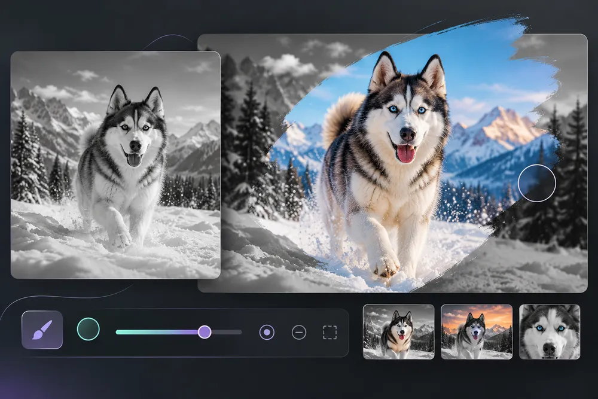

Selective Invert & Color Pop
Paint an inverted region or reveal color over a monochrome photo.
The most convincing edit often starts with one small adjustment. Balance the light, find a comfortable color temperature and then add a style if the picture needs it. A portrait, a snowy mountain and an office screenshot each ask for a different treatment. Use the original as a reference, and check fine detail before committing to a stronger blur, grain or sharpening setting.
How to use Selective Invert & Color Pop ↓How to use Selective Invert & Color Pop
Paint an inverted region or reveal color over a monochrome photo. The instructions below explain the actual controls in this editor.
Choose your source
Select a file or drop it into the upload area. The source stays on your device for local tools. Use New photo in the editor to replace it and reset the preview.
Set the controls
Select blur, motion, radial, pixelate, invert or color pop. Set amount and brush radius; Erase removes the painted mask and Undo restores one stroke.
Review the preview
Paint on the photo and inspect edges at a smaller brush size before exporting. On a phone, swipe the bottom tool strip sideways to find more settings; tap a tool to open its controls while the image remains visible.
Export and check the result
Choose the output format and quality where offered, select Export, and download the result. Keep the original file and inspect the saved copy at full size. Large images can exceed mobile browser memory.
Make the photograph feel intentional
Brush tools keep a separate mask so the effect can be limited to the area you choose. Use a larger brush for broad regions and a smaller brush near edges. Pixelation and blur are visual obfuscation, not a mathematical guarantee that sensitive information is unrecoverable. For highly sensitive text, fully cover or remove the region in a suitable editor.
- Paint an inverted region or reveal color over a monochrome photo.
- Use a dedicated URL and controls tailored to this operation.
- Keep the source separate from the downloaded result.
- Read visible output dimensions, format and processing status.
Brush tools keep a separate mask so the effect can be limited to the area you choose. Use a larger brush for broad regions and a smaller brush near edges. Pixelation and blur are visual obfuscation, not a mathematical guarantee that sensitive information is unrecoverable. For highly sensitive text, fully cover or remove the region in a suitable editor.
Questions, answered
What does Selective Invert & Color Pop do?
Paint an inverted region or reveal color over a monochrome photo.
Does it change my original file?
No. The workspace exports a separate result. Keep the source if you may want another version.
What should I check before using the result?
Brush tools keep a separate mask so the effect can be limited to the area you choose. Use a larger brush for broad regions and a smaller brush near edges. Pixelation and blur are visual obfuscation, not a mathematical guarantee that sensitive information is unrecoverable. For highly sensitive text, fully cover or remove the region in a suitable editor.
Are there any practical limits?
Very large files can exceed browser memory. Specialized source formats need a supported decoder, and the saved image may not retain source metadata.
Will this replace my original file?
The tools create a separate output. Keep the original until you have checked the exported file; the site does not provide cloud project backups.
Can I publish the result?
Use source media you own or have permission to edit. Check the destination’s requirements and the rights of anyone shown before publishing.